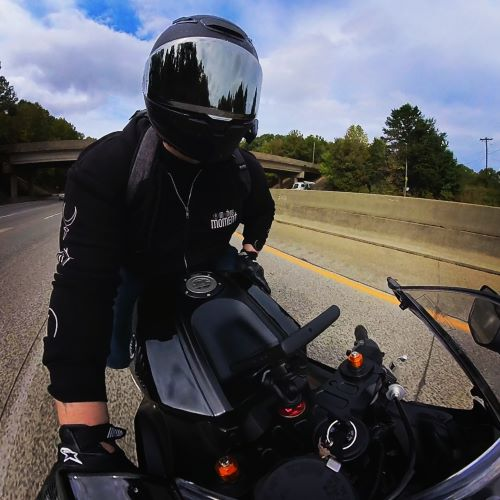
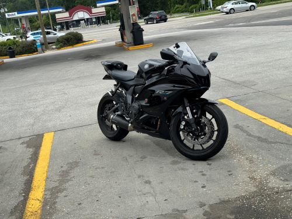
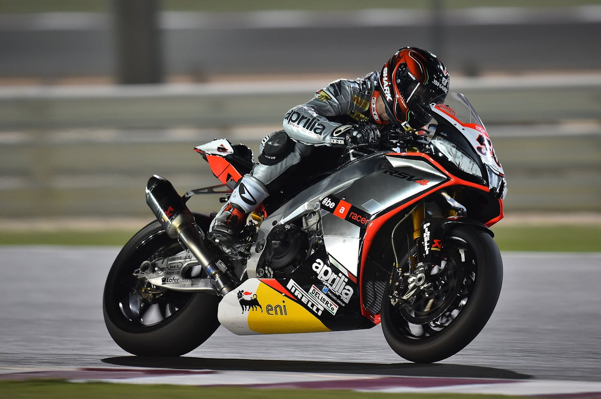
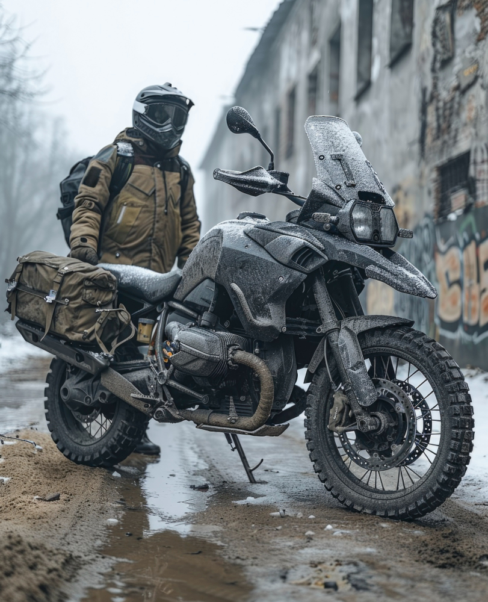
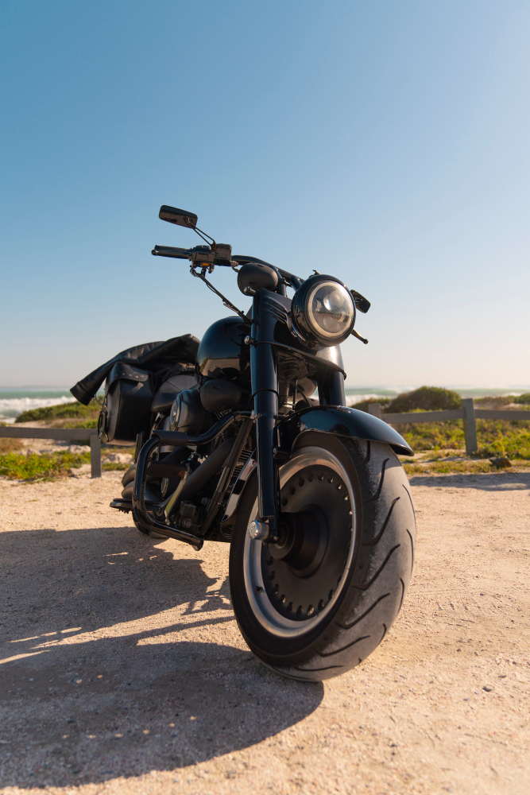
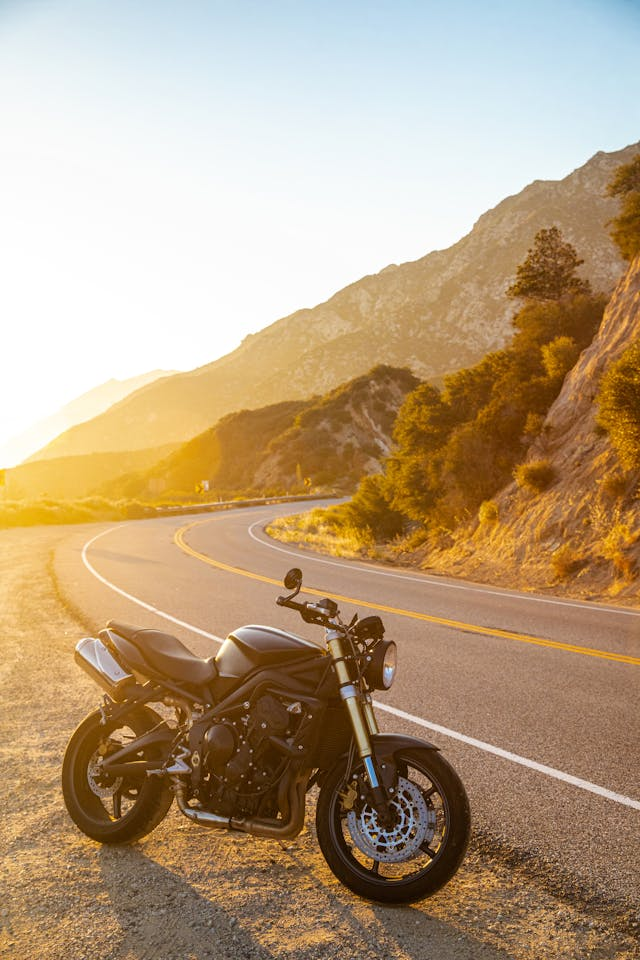

Home
Welcome to the start of your motorcycle journey!

About
Have you ever wanted to experience your drive? Riding a motorcycle is like cutting through the landscape, where you get to feel, smell, and experience everything around you!

Types of Motorcycles
Sport Bikes
Sport bikes are built for speed and agility, featuring aerodynamic designs and powerful engines.

Cruisers
Cruisers are designed for comfort and style, often featuring a relaxed riding position and a classic look.

Adventure Bikes
Adventure bikes are versatile machines capable of handling both on-road and off-road adventures.

Touring Bikes
Touring motorcycles are built for long-distance rides, offering comfort, storage, and advanced technology.

Riding Season
Riding a motorcycle can be year round, depending on if you're willing to brave the colder months. Riding season is the peak time of year. Riding season starts in the spring and goes all summer long and ends in the fall months.

Tail of the Dragon
The Tail of the Dragon is the number one road for cars and motorcycles in the USA. It opened in 1975 and has been opened every year since. The tail has 318 curves in just 11 miles. The road is US 129, which boarders the Great Smoky Mountains and the Cherokee National Forest.

How to Start
Start with a beginner-friendly bike, take the Motorcycle Safety Course, and buy protective gear for while you ride.
Motorcycle Safety Foundation
The Motorcycle Safety Foundation has various classes to help new riders learn the basics and fundamentals of learning how to ride a motorcycle. You can start with the basic riders course. This course will help every new rider get the skills and confidence needed to ride a motorcycle.
Why Ride?
Riding a motorcycle is not just about transportation; it's about experiencing the world in its purest form. It's the rush of wind against your skin, the rhythmic hum of the engine beneath you, and the unfiltered connection to the road ahead. Every twist of the throttle ignites a sense of freedom, an escape from the mundane, and an embrace of adventure. The open road becomes your canvas, painted with sunsets, winding mountain passes, and the thrill of the unknown. To ride is to feel alive, to chase the horizon with an unbreakable spirit, and to discover the soul of every journey.
AI Prompts
These are the prompts I used to generate the skeleton for my motorcycle riding website:
- I used AI to generate the skeleton for the HTML
- I used AI to generate the skeleton for the CSS
- I used AI to generate the skeleton for the JavaScript